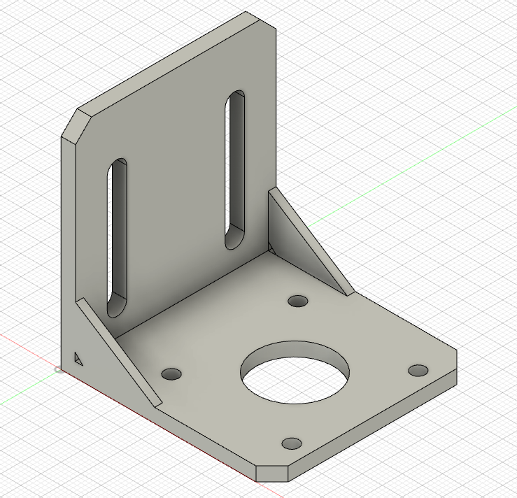
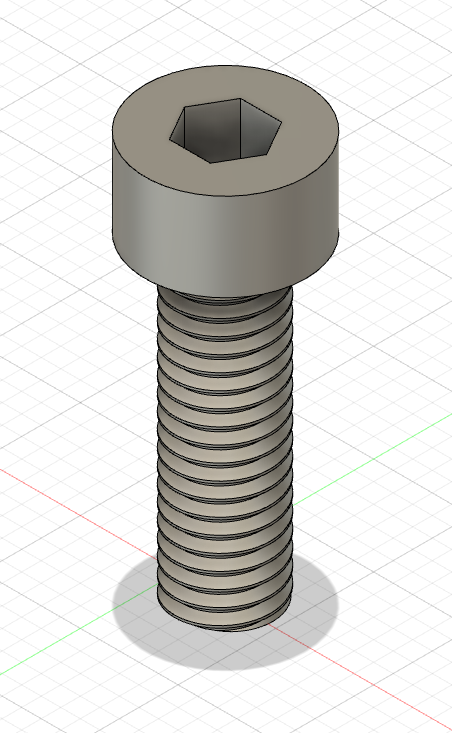

Week 2: Design and Cutting
The assignment for the second class was to select at least 3 components from my kit, measure them using calipers, and model them in Fusion 360. Since I was just getting started with Fusion 360, I first watched a series of tutorials on YouTube that taught me the basics of Fusion 360 and how to use many of the tools necessary to complete my assignment. I first started by modeling the L-Shaped Bracket from the Hardware bag in my kit. I used the caliper to accurately measure the dimensions and started modeling.
While working on the L-Bracket, I learned:
- How to use reference lines to make sure I'm modeling in the right places
- How to use the mirror tool to save time and model less. In this case, I only had to make one of the small circles and was able to mirror it to make the other three.
- How to extrue the object and then join two extruded objects together
- How to use chamfer to flatten the edge, which was necessary for this bracket
- How to change the component's material (in this case to ABS Plastic)
Here's an image of my finished L-Shaped Bracket:
The next tool I decided to model was the flat bracket, which also came from the Hardware bag in my kit. Again, I used the caliper to measure each aspect of the bracket so that my model would be accurate
While working on the flat bracket, I learned:
- How to measure interior diameters (like with the circles) using the inverted part of the caliper
- How to use user paremeters to make changing the lengths/dimensions of various objects much easier (thanks Nathan!)
- How to use the slot tool to make rounding the rectangles in the sketch much easier, as the slot tool is actually a rounded rectangle
With this new knowledge, I was able to make this:

The final tool I modeled was the screw for bearings, which also came from the smaller bag within my kit's Hardware bag. Again, I used the caliper to measure each part of the screw so that my model would be accurate. This time, I started with user paremeter's as well, recording my caliper measurements so that I could change them if necessary.
While working on the screw, I learned:
- How to make threads on a cylinder using the thread tool, which was crucial for accurately modeling the screw
- How to use the inscribed polygon tool to, in this case, make the hexagon on the top of the screw that would fit an allen wrench
- How, once the hexagon was made, to cut into the already extruded cylinder and make the actual hole for the allen wrench
- How to better use the move tool to make sure my new sketches don't appear in the wrong place (it started by putting the top of the screw on the bottom of the threads, so I knew I had to fix that!)
With more knowledge, I was able to make this:
